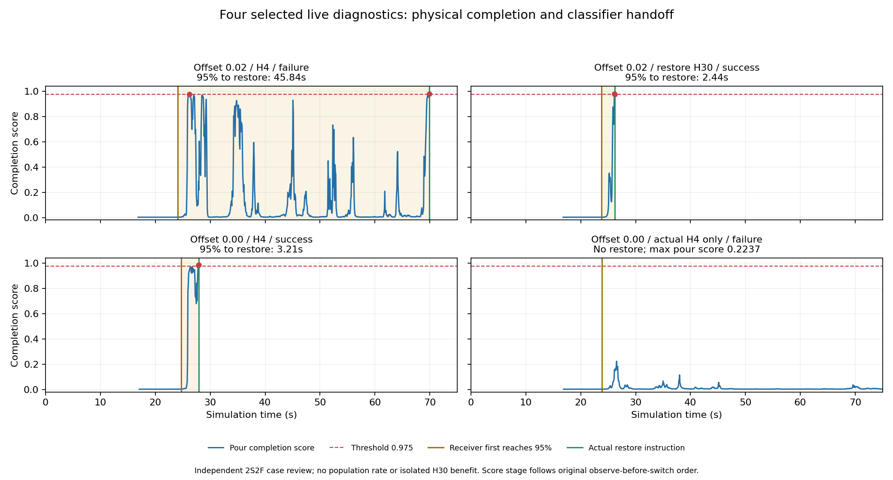

T-1048 · 未发布的静态候选
烧杯为什么滑：arm7 × hand6 固定指令对照
四路对应同一条原始 native 时钟。E＝原专家命令；L＝原失败 Ours/TTC 模型命令。这四路均为固定命令回放诊断，没有在线模型、Planner 或 GT 控制，不是在线成功率。
EL（专家 arm7 + 模型 hand6）并非“只是没松手”：它先把液体倒入 B，随后在空中脱手，之后才撞到接收垫，没有放回原垫。LE 使用仍然闭合的专家手指目标，也发生了脱手。两者支持不同机械因素或时序相互作用，不能据此声称完成了修复。
共同展示时间：native 0–47.733333s，ticks 0–5728，717 个原始相机帧，15Hz。视频容器为 47.800s；末帧时间戳是 47.733333s，未增加原生仿真。LL 从原 75s 视频取前 717 帧，仅为展示派生裁剪。没有按子任务阶段对齐或拉伸时间。
来源辨别：这里的 source_episode=0 / EP000 是训练与测试的场景索引，表示“场景索引0，同一固定 clock 诊断”。LL 来自完整失败的 Ours H8 原命令固定回放；它与旧 paired 网页“Episode 1 / Ours H4 / 倾角截止”不是同一次 rollout，不能把两者的视频或失败时刻相互替代。
关键事件：保留精确的 120Hz 时间
点击有时间的单元格，四路一起定位到事件发生后首个 15Hz 相机帧；表格显示原始事件 tick 和秒数，不把相机帧伪装成 120Hz 视频。未发生的事件显示“本窗口无”。持续脱手按“起杯后手接触点数为 0、连续至少 1s 的区间起点”描述，它不是在线成功条件。
| 原始事件 | EE | EL | LE | LL |
|---|
独立附录：物理上倒入 95% 后，为什么还迟迟不切换？
以下是另一组已接受的真实推理日志，与上面的固定命令四路分开。只展示已有逐帧 completion score、原单案结果和真实切换，未计算新模型或新成功率，也未宣称阈值已调好。
其中一案从物理 95% 到真实 restore 切换相隔 45.84s；另一案倾倒输入的最高完成分数仅约 0.2237。H30 干预前已经出现轨迹分叉，因此不能把结果差异直接归因于 H30。

完整逐帧 JSON · 原始 SVG 图 · 该附录原始 SHA 清单

| 原单案配置 | 原结果 | 物理95% | 真实restore | 相隔 | pour最高分 | 首次实际H30 |
|---|
原始源与解释边界
原独审来源绑定 · 本页完整 SHA 清单 · 四路原视频、case seal、RESULT 与独审 SHA · 精确事件 JSON · 冻结的120Hz机械曲线 CSV.gz · 冻结机械报告
各路始终显示完整任务说明、arm7/hand6 命令来源以及离线测得的物理进度。这些标注不是 Planner 子任务输出。接触点数不是握力，开手目标变化不是实际释放；接触丢失后的旋转属于自由杯运动，不能倒推为在手中滑转。